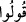

Sa’dî Müftî der ki: Nazımda iç içe geçiş/ihtibak vardır. İlk ifadede ikinci ifadenin
mukabili, ikincisinde de ilkinin mukabili hazfolunmuştur. Aslında şöyle olacaktı: De ki:
İman etmediniz; ‘iman ettik’ demeyin fakat teslim oldunuz; ‘teslim olduk’ deyin. Bu
Kur’ân’ın ihtisarlarındandır.
“Henüz iman kalplerinize yerleşmedi.” ifadesi hâl olup sahibü’l-hâl (
)
ifadesindeki “vav” zamiridir. Yani kalplerinizle dilleriniz tam uyuşmadığı durumda
teslim olduk; Müslüman olduk deyin. ( ) edatındaki henüz olmadı ama olabilir mânâsı,
bu kimselerin daha sonra iman ehli olduklarını göstermektedir.
Eğer ihlas ile ve nifakı terk etmek suretiyle “Allah’a ve elçisine itaat ederseniz,
Allah amellerinizden hiçbir şeyi eksiltmez.” Yani o amellerden kazandığınız ecirlerden
hiçbir şey eksiltmez, demektir.
İmam der ki: ‘eksiltmez’ ifâdesinin mânâsı şudur: Siz ihlasla ve nifaktan ârî olarak
zaafınıza uygun biçimde iyilik yaparsanız; Allah Teâlâ da şanına yakışır şekilde size
mukabelede bulunur, sizin iyiliklerinizin mükâfatını noksan ve kusura bakarak azaltmaz.
Şöyle ki, bir kimse bir melike çarşıda fiyatı bir dirhem olan bir meyve götürse melik de
ona bir dirhem veya bir dinar verse melikin ikramı noksan olur ve hatta ona ‘cimri’
denilir. Âyetin mânâsı, amelin karşılığının noksansız bir şekilde verilmesi değildir.
Bilakis mânâ, amellerden beklediğiniz ecrin noksansız bir şekilde verilmesidir. Şu
ifadeler de bunu te’yîd eder: “Çünkü Allah” itaat edenlerin yapmış oldukları
aşırılıkları “çok bağışlayan” ve onlara fazl u keremi ile muâmele edip ‘çok
esirgeyendir.”
Bahru’l-ulûm’da der ki: Âyette imanın hakikatinin kalp ile tasdik olduğuna; yalnızca
dil ile ikrar edip beden ile onun şartlarını yerine getirmenin “îman” olmadığına işaret
vardır.
et-Te’vîlâtu’n-Necmiyye’de der ki: İmanın hakikatinin dil ile söylenen cinsten
olmadığına; bilakis Allah kişinin kalbini İslam’a açınca o kalbe giren bir nur olduğuna
âyette işaret vardır. Nitekim âyet-i kerîmede şöyle buyrulur: “O rabbinden bir nur
üzeredir.” (Zümer 39/22)
Efendimiz (s.a.) bu nûrun vasfı ile alâkalı şöyle buyurmuştur: “O nur kalbe girerse
kalp genişler, açılır.” Denildi ki: Ya Rasûlallah bu nuru bildirecek bir alâmet var
mıdır? Buyurdu ki: “Tabii ki vardır. Aldanma diyarı; dünyadan uzak durmak, ebediyet
diyarına yönelmek, ölüm gelmeden ona hazırlanmak.”[215]
Bunun için Cenâb-ı Hak buyurdu ki: “Henüz iman kalplerinize yerleşmedi.” Bu ise
îmânın mahallinin kalb olduğuna delildir. Muhakkik kelâmcıların cumhuruna göre îman
kalp ile tasdiktir, ikrar ise îmanın cüzü olmayıp cenaze namazı gibi bazı dünyevî
ahkâmın icrâsı için şarttır, çünkü kalb ile tasdik bâtınî bir husus olup ona kimse muttali
olamaz, bilinmesi için bir alâmet gerekir. Kim kalbi ile tasdik edip dili ile ikrar
etmezse, şartı bulunmadığı için dünya ahkâmı bakımından mümin kabul edilmese de
Allah katında mümindir. Dil ile ikrârı imandan bir rükün olarak görenlere göre ise